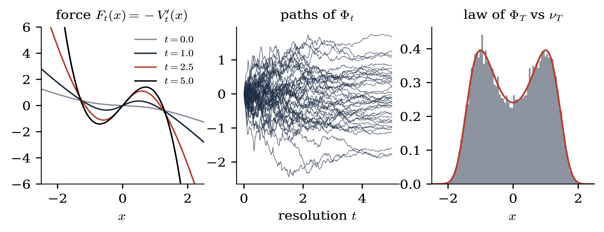
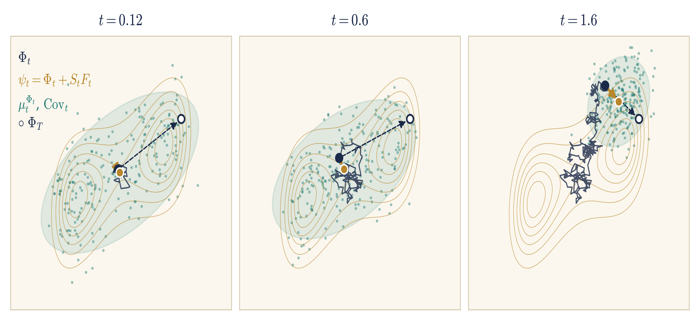
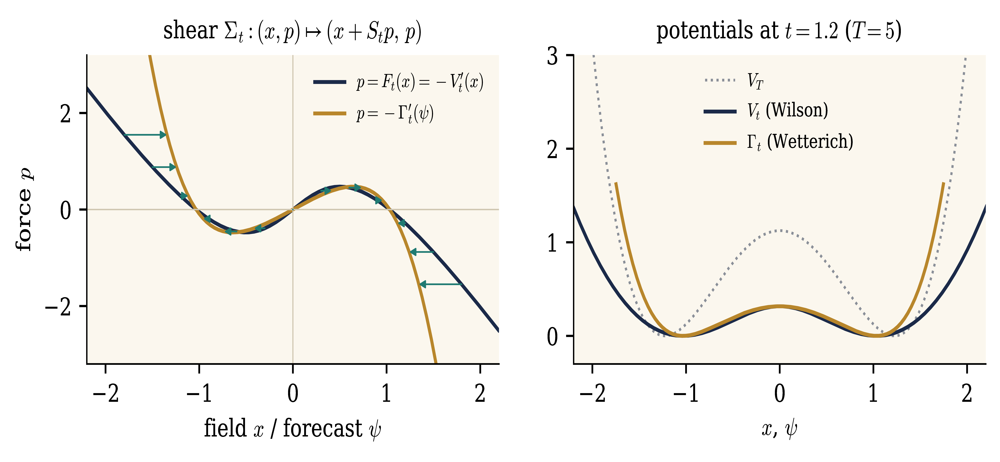
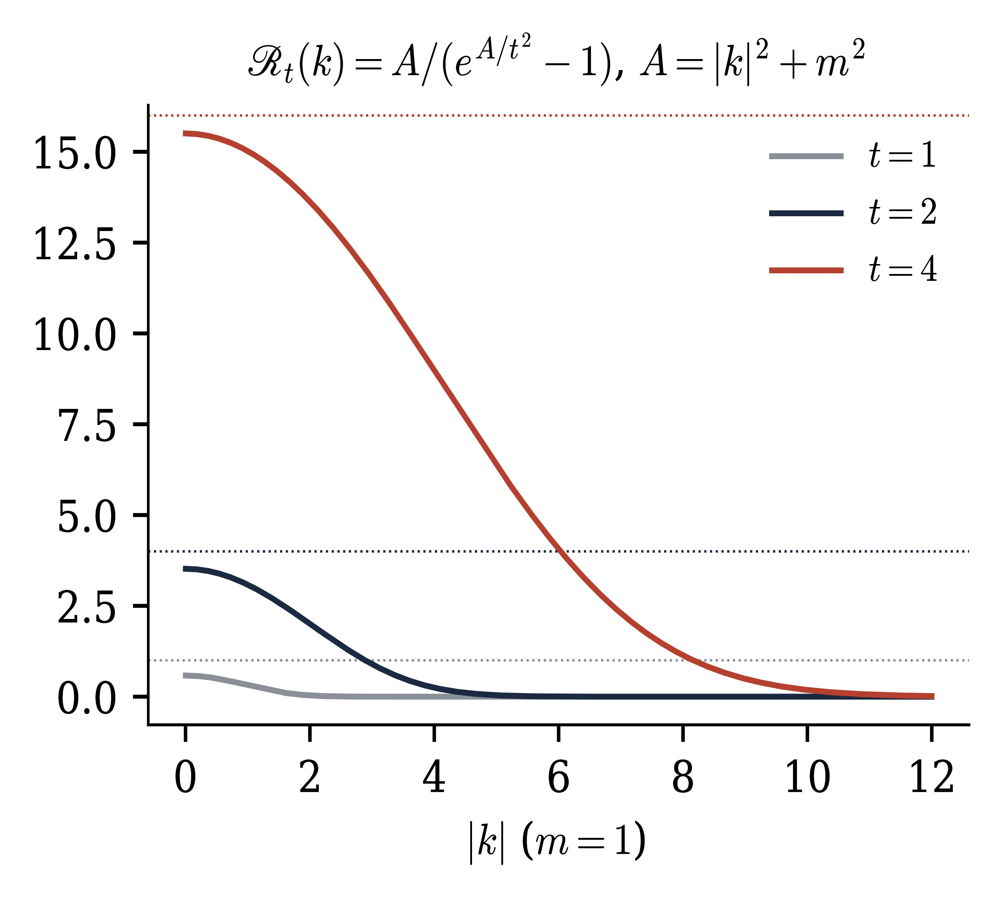
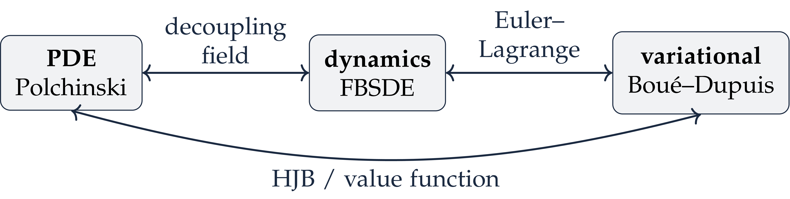

\(\mathbb{T}^2\),
heat profile, same noise. The force is shown to first order in \(\lambda\): \(F_t = - 4 \lambda H_3
(\Phi_t ; c_t)\), each panel in its own units.
A Constructive Introduction to Quantum Field Theory
The Polchinski flow and forward–backward equations
Massimiliano Gubinelli | University of Oxford
SISSA lectures, Lecture 4 (provisional) — notes: Lecture 4, §§7–11
So far. Stochastic quantisation of the GFF; the field at resolution \(t\) is a martingale of smooth fields; observables are martingales in the filtration of finite-resolution measurements.
Today. Interactions, still indexed by the resolution \(t \in [0, \infty)\).
Interactions: the Polchinski equation and its FBSDE; the force is an observable.
The FBSDE in force coordinates \(\Rightarrow\) the Wetterich equation.
Variational structure: Boué–Dupuis, HJB, infinite volume.
Additional material: flatness, counterterms for \(\Phi^4_3\), DS equations at every scale.
Caveat. Statements marked
Interactions: the Polchinski equation and FBSDEs
Lecture 4
Finite volume \(\mathbb{T}^d_L\), terminal resolution \(T < \infty\) (UV cutoff), interaction \(V_T\) bounded below, e.g.
Definition.
The interaction felt at resolution \(t\) once the scales \([t, T]\) are integrated out; \(V_0 (0) = - \log Z_T\) is the free energy.
Proposition.
At every resolution the field is again a Gibbs measure: reference \(Q_t\), potential \(V_t\).
The measure-valued martingale \(t \mapsto \mu_t^{X_t}\) goes from \(\nu_T\) (\(t = 0\)) to \(\delta_{X_T}\) (\(t = T\)): a stochastic localisation of \(\nu_T\) (Eldan), adapted to the covariance profile.
Proof of the marginals. Under \(\mathbb{P}_0\), \(X_T = X_t + (X_T - X_t)\) with independent increment \(\sim \mu^{Q_{T, t}}\), so
Theorem.
Proof. \(u_t = \mathrm{e}^{- V_t} = \mathrm{e}^{\frac{1}{2} \Delta_{Q_{T, t}}} u_T\), \(\Delta_Q = \text{Tr} (QD^2)\), solves the backward heat equation \(\partial_t u_t = - \frac{1}{2} \text{Tr} (\dot{Q}_t D^2 u_t)\). Insert \(D^2 u = (DV \otimes DV - D^2 V) u\).
Nonlinear term: generates new, nonlocal interactions: trees. |
Trace term: contracts pairs of fields with the shell covariance \(\dot{Q}_t \hspace{0.17em} \mathrm{d} t\): loops. |
A backward Hamilton–Jacobi equation; \(u = \mathrm{e}^{- V}\) is a Cole–Hopf transform.
Theorem.
The effective force \(F\) is a \(\mathbb{P}\)-martingale: an observable field of the interacting theory.
Proof. Density process \(M_t = Z_T^{- 1} \mathrm{e}^{- V_t (X_t)}\). Itô \(+\) Polchinski: no drift, \(\mathrm{d} M_t = - M_t \langle DV_t (X_t), \dot{Q}_t^{1 / 2} \mathrm{d} W_t \rangle\). Girsanov: \(W^{\mathbb{P}}_t = W_t + \int_0^t \dot{Q}_s^{1 / 2} DV_s (X_s) \hspace{0.17em} \mathrm{d} s\). Finally \(DV_t (\phi) = \mu_t^{\phi} (DV_T)\).
Read as an equation for an unknown pair \((\Phi, F)\):
The field is driven forward by a force determined backward from the terminal field.
No Polchinski equation needed; \(\nu_T = \text{Law} (\Phi_T)\) from the solution.
Strategy: solve with renormalised \(V_T\), estimates uniform in \(T\) and volume, take limits.
\(\Phi\) is not an observable (a semimartingale); observables are built from the noise and from \(F\).
\(\mathbb{T}^2\),
heat profile, same noise. The force is shown to first order in \(\lambda\): \(F_t = - 4 \lambda H_3
(\Phi_t ; c_t)\), each panel in its own units.
At finite \(T\) the force is a closed observable, \(F_t =\mathbb{E}_t [F_T]\), and for \(\Phi^4\) it is local:
As \(T \to \infty\)
\(F\) should converge as an observable. In \(d = 2\) it is closed, \(F_{\infty} = - 4 \lambda : \Phi_{\infty}^3\):. In \(d = 3\) a closed limit \(F_t =\mathbb{E}_t F_{\infty}\) would let the DS identity pass to \(t \to \infty\), and conditioning on \(\sigma (\Phi_{\infty})\) would give an integrable logarithmic derivative of \(\Phi^4_3\) as a function of the field: not expected (Albeverio–Liang–Zegarlinski 2006: the regularised ones do not converge in \(L^2\)). Locality of the limiting force is the crux of the construction.

For \(G\) a functional of the terminal field, \(O_t =\mathbb{E}^{\mathbb{P}}_t [G (\Phi_T)] = G_t (\Phi_t)\), \(G_t (\phi) = \mu_t^{\phi} (G)\), and
the backward Kolmogorov equation, a Doob transform of the Gaussian heat equation. Any solution gives an observable, closed at finite \(T\), not necessarily as \(T \to \infty\). The force is \(G = - DV_T\).
Tangent observables. \(V_T^{\theta}\) depending on a coupling, \(U_t = \partial_{\theta} V_t^{\theta}\):
E.g. the running \(: \varphi^4\): for \(\theta = \lambda\): observables conjugate to the coordinates of theory space.
Differentiating Polchinski, \(F_t = - DV_t\) solves the backward viscous Burgers equation
Cole–Hopf \(F = D \log u\) linearises it (\(u = \mathrm{e}^{- V}\) solves a heat equation).
Uses only the force: intensive, while \(V_t\) is extensive (\(\sim\) volume). Matters in infinite volume.
Flows for different covariances commute when \(DF\) is symmetric, i.e. \(F\) a gradient. Non-gradient forces (general Wilson–Itô diffusions): curvature.
The FBSDE in force coordinates: the Wetterich equation
Lecture 4
Minimise \(J (u) = g (x_T) + \int_t^T \ell (x_s, u_s) \mathrm{d} s\) subject to \(\dot{x} = b (x, u)\), \(x_t = x\). Hamiltonian:
Pontryagin. Along an optimal pair there is a costate \(p\) with
State forward, costate backward: a two-point boundary problem.
First variation: \(\delta J = - \int \langle \partial_u H, v \rangle \mathrm{d} s\). The costate is the Lagrange multiplier of \(\dot{x} = b\).
Value function \(V (t, x)\): \(\partial_t V = H_{\ast} (x, - DV)\), \(H_{\ast} = \max_u H\) (HJB). Hamilton's equations are its characteristics, and
the costate is the force the future exerts on the present.
Pontryagin–Boltyanskii–Gamkrelidze–Mishchenko 1962.
State \(=\) field, \(b = \dot{Q}_s^{1 / 2} u\), \(\ell = \frac{1}{2} \|u\|^2\), \(g = V_T\). Maximising over \(u = \dot{Q}_s^{1 / 2} p\):
a free particle with mass matrix \(\dot{Q}_s^{- 1}\), and no dependence on the state \(x\).
Without noise: \(\dot{p} = 0\), \(\dot{x} = \dot{Q} p\): the shear \((x, p) \mapsto (x + S_t p, p)\). All interaction is in \(p = - DV_T (x + S_t p)\): trees. HJB \(=\) Polchinski without the trace.
With noise (Bismut 1973, Peng 1990): the costate solves a BSDE
with \(\Upsilon \mathrm{d} W\) the price of adaptedness. Here \(\partial_x H = 0\): the costate is a martingale, \(p_t = - DV_t (X_t) = F_t\).
The Itô term turns HJB into Polchinski: quadratic part \(=\) trees, trace term \(=\) loops.
The FBSDE is the stochastic Hamiltonian system: field \(=\) state, force \(=\) costate.
\(S_t := Q_T - Q_t\): the covariance still unresolved; \(\dot{S}_t = - \dot{Q}_t\), \(S_T = 0\). \(\mathrm{d} F_t = \Upsilon_t \hspace{0.17em} \mathrm{d} W_t\).
Pontryagin. Control problem \(\mathrm{d} X = \dot{Q}_t^{1 / 2} (u \hspace{0.17em} \mathrm{d} t + \mathrm{d} W)\), cost \(V_T (X_T) + \frac{1}{2} \int \|u\|^2\). Hamiltonian \(\langle p, \dot{Q}_t^{1 / 2} u \rangle - \frac{1}{2} \|u\|^2\) is state independent \(\Rightarrow\) \(\mathrm{d} p_t = \Upsilon_t \hspace{0.17em} \mathrm{d} W_t\), \(p_T = - DV_T (X_T)\), \(u_t = \dot{Q}_t^{1 / 2} p_t\).
The field \(\Phi\) is the state; the force \(F\) is the costate.
\(F_t (\cdot)\) is the decoupling field, Burgers its quasilinear PDE.
Transport term \(- DF [\dot{Q} F]\) \(\leftarrow\) drift of the state: trees.
Itô term \(- \frac{1}{2} \text{Tr} (\dot{Q}
D^2 F)\) \(\leftarrow\) noise: loops.
Noiseless flow from \(t\) to \(T\): the linear shear \(\Sigma_t : (x, p) \mapsto (x + S_t p, \hspace{0.17em} p)\), the characteristics of the transport part.
Proposition.
a martingale with \(\mathrm{d} \psi_t = \dot{Q}_t^{1 / 2} \mathrm{d} W_t + S_t \hspace{0.17em} \mathrm{d} F_t = (\mathbb{1} + S_t DF_t (\Phi_t)) \dot{Q}_t^{1 / 2} \mathrm{d} W_t\).
Proof. \(F\) martingale \(\Rightarrow \mathbb{E}_t \int_t^T \dot{Q}_s F_s \hspace{0.17em} \mathrm{d} s = S_t F_t\). In the differential, \(\dot{Q}_t F_t \hspace{0.17em} \mathrm{d} t\) cancels with \(\dot{S}_t F_t \hspace{0.17em} \mathrm{d} t\).
\(\Phi_t = \psi_t - S_t F_t\): a martingale (the field observable) minus the drift still expected on the unresolved scales.
Noise of \(\psi\): fresh shell fluctuation \(+\) revision of the forecast. The forward–backward coupling moves from the drift to the volatility.
\(\psi\) is the interaction picture w.r.t. the classical dynamics.
Invert \(x \mapsto \psi = x + S_t F_t (x)\): \(x = \psi + S_t \mathscr{F}_t (\psi)\), \(\mathscr{F}_t (\psi) := - F_t (x)\). Response and regulator:
Theorem.
\(\psi_T = \Phi_T\). No drift; covariance \(\mathcal{C}_t = H_t \dot{\mathscr{R}}_t H_t^{\ast}\). The decoupling field solves the pure diffusion equation
Proof. \(\mathbb{1} + S_t DF_t = H_t S_t^{- 1}\); \(\mathscr{F}_t (\psi_t)\) is a martingale and \(\psi\) has no drift: Itô.
Compare with Burgers:
The transport term is absorbed exactly: dropping the Itô term, \(\mathscr{F}_t = DV_T\) does not move. All trees live in the coordinate change \(x = \psi + S_t \mathscr{F}_t (\psi)\).
Loops come only from the quadratic variation \(\mathcal{C}_t\) of the forecast; the nonlinearity has moved into its field dependence.
No gradient structure, no Gaussian convolution used: valid for any FBSDE with a Markov martingale force, whenever the coordinate change is invertible.
Proposition.
So \(H_t > 0\), \(\mathbb{1} + S_t DF_t\) is always invertible, and \(H_t \leq S_t\) for convex \(V_T\) (Brascamp–Lieb).
The forecast coordinates are the first two conditional moments of the stochastic localisation: \((\psi_t, \text{Cov}_t) = (\mathbb{E}_t \Phi_T, \text{Cov}_t \Phi_T)\). Since \(\mathbb{E}_t [\Phi_T \otimes \Phi_T] = \psi_t \otimes \psi_t + \text{Cov}_t\) is a martingale,
Gaussian reference: \(S_t \dot{\mathscr{R}}_t S_t = \dot{Q}_t\).

\(F_t = - DV_t\): the graph \(\{(x, - DV_t (x))\}\) is a Lagrangian submanifold of (field, force) space. The shear \(\Sigma_t\) is symplectic (\(S_t\) symmetric), and the image is a graph over \(\psi\) (\(x \mapsto x + S_t F_t (x)\) is \(S_t \hspace{0.17em} D\) of a strictly convex function). Hence
Generating function: the Moreau transform
optimality: \(x = \psi + S_t D \Gamma_t (\psi)\), \(DV_t (x) = D \Gamma_t (\psi)\). Well defined: \(\frac{1}{2} \langle x, S_t^{- 1} x \rangle - V_t (x)\) has Hessian \(S_t^{- 1} \text{Cov}_t S_t^{- 1} > 0\).

Theorem.
Equivalently, for the effective average action \(\Gamma^{\text{EAA}}_t = \Gamma_t + \frac{1}{2} \langle \psi, Q_T^{- 1} \psi \rangle\),
from the bare action (\(t = T\), \(\mathscr{R}_T = \infty\)) to the 1PI effective action of \(\nu_T\) (\(t = 0\), \(\mathscr{R}_0 = 0\)).
Proof. \(D_v \text{Tr} (\dot{\mathscr{R}} H) = - \text{Tr} (\mathcal{C} \hspace{0.17em} D^2 \mathscr{F}) [v]\) by symmetry of \(D^3 \Gamma\), so the force equation reads \(D \left( \partial_t \Gamma - \frac{1}{2} \text{Tr} (\dot{\mathscr{R}} H) \right) = 0\). The constant: envelope theorem \(+\) Polchinski.
Every object in the Wetterich equation is an observable of the Polchinski process.
| Wetterich | FBSDE |
| field argument \(\psi\) | forecast \(\psi_t =\mathbb{E}_t [\Phi_T]\) |
| \(D \Gamma_t (\psi_t)\) | minus the costate, \(\mathbb{E}_t [DV_T (\Phi_T)]\) |
| propagator \((D^2 \Gamma^{\text{EAA}}_t + \mathscr{R}_t)^{- 1}\) | conditional covariance \(\text{Cov}_t\) |
| regulator \(\mathscr{R}_t = S_t^{- 1} - Q_T^{- 1}\) | precision of the unresolved shell minus the prior's |
| \(\partial_t \Gamma_t\) | \(\frac{1}{2} \text{Tr} [\dot{\mathscr{R}}_t (\text{Cov}_t - S_t)]\) |
Driven by interacting minus free conditional covariance; one-loop exact, with the full propagator; in the Gaussian case only the constant flows. Wetterich 1993; Morris 1994; Berges–Tetradis–Wetterich 2002
For \(T = \infty\), \(S_t = C (1 - \mathrm{e}^{- A / t^2})\) and
The exponential regulator of the functional RG. Other profiles give other regulators, e.g. the mass regulator \(\mathscr{R}_t = t^2\). |
 |
Constrained free energy. Gibbs variational principle for the conditional law:
the free energy of the unresolved shell, constrained to the forecast. \(V_t\) is the value function; \(\Gamma_t\) is its Moreau transform.
Tree level. Drop the Itô term: \(\Gamma_t = V_T\), and the Moreau transform becomes the Hopf–Lax formula
which solves \(\partial_t V = \frac{1}{2} \langle DV, \dot{Q} DV \rangle\): the saddle point of the Gaussian convolution. The minimiser solves the classical field equation \(S_t^{- 1} (y - x) + DV_T (y) = 0\) in the shell \([t, T]\); expanding in \(V_T\) gives exactly the tree diagrams.
Variational structure
Lecture 4
\(\mathbb{H}_a\): adapted drifts with \(\mathbb{E} \int_0^T \|u_s \|^2 < \infty\); \(X^u = X + \int_0^{\cdot} \dot{Q}_s^{1 / 2} u_s \hspace{0.17em} \mathrm{d} s\).
Theorem.
Optimal feedback \(u^{\ast}_s = - \dot{Q}_s^{1 / 2} DV_s (X^{u^{\ast}}_s)\), \(\text{Law} (X^{u^{\ast}}_T) = \nu_T\). \(V_t\) is the value function; Polchinski is the HJB equation.
Proof (verification). Itô \(+\) Polchinski:
Euler–Lagrange. Perturb \(u \to u + \varepsilon v\):

Entropy. \(\frac{1}{2} \mathbb{E}_0 \int \|u\|^2 \geq \text{Ent} (\text{Law} (X^u) | \text{Law} (X))\): a pathwise lift of the Gibbs principle \(- \log Z_T = \inf_{\nu} \{ \int V_T \hspace{0.17em} \mathrm{d} \nu + \text{Ent} (\nu | \mu^{Q_T})\}\). Useful because adapted drifts can be built scale by scale, as functionals of \(X\).
Generating functional:
Bounds uniform in \(T\) \(\Rightarrow\) tightness, moments, identification of limits.
\(\Phi^4_3\). The leading drift \(u_s \approx - 4 \lambda \dot{Q}_s^{1 / 2} : X_s^3\): has divergent cost,
Change variables \(u = - 4 \lambda \dot{Q}^{1 / 2} : X^3 : + r\), then paracontrolled changes of variables: the singular terms become explicit polynomials in Wick powers of \(X\), cancelled by the counterterms, and the remainder is coercive. Uniform control in Besov/paracontrolled norms \(=\) construction of \(\Phi^4_3\). Barashkov–Gubinelli, Duke 2020; EJP 2021
On \(\mathbb{T}^d_L\), \(V_0 (0)\) and \(V_t\) are extensive (\(\sim L^d\)). Three intensive objects survive:
the force. For \(V_T = \int v_T (\varphi)\), on \(\mathbb{R}^d\):
Everything is local; infinite-volume limits should solve this. Uniqueness of solutions \(\leftrightarrow\) uniqueness of the theory; non-uniqueness expected at phase transitions (\(\Phi^4_2\), deep double well).
the Burgers flow of the force;
differences of free energies \(\mathcal{W}_T^{(L)} (f)\), \(f\) local: bounded as \(L \to \infty\); basis of the infinite-volume analysis of \(\Phi^4_2\) and \(\exp (\Phi)_2\).
Estimates must be local (weighted norms, volume-independent constants): the analogue of “coming down from infinity”. Barashkov–Gubinelli, PMP 2023; Glimm–Jaffe–Spencer 1975
Additional material
Lecture 4
\(\mathcal{R}_S (V) = - \log (\mu^S \ast \mathrm{e}^{- V})\). Since \(\mu^S \ast \mu^{S'} = \mu^{S + S'}\),
an orbit of an abelian semigroup indexed by the cone of positive covariances, nonlinear on \(V\), linear on \(\mathrm{e}^{- V}\). Generators:
Proposition.
Different profiles with the same endpoints are different coordinate systems on the same RG trajectory: they change \(\Phi\) and intermediate observables, not the terminal theory. No holonomy.
Gaussian convolution lowers the Wick ordering: \(V_t = \int [\lambda : \phi^4 :_t + \gamma_T : \phi^2 :_t] + O (\lambda^2)\), the dual of \(\int H_4 (X_t ; c_t)\) being an observable. At second order, \(S = Q_{T, t}\):
\(T \to \infty\) at fixed \(t\), \(d = 3\), \(G (z) \sim (4 \pi |z|)^{- 1}\):
\(k = 1, 2\): finite, nonlocal.
\(k = 3\) (sunset): \(S^3 \sim |z|^{- 3}\); local divergence \(- 48 \lambda^2 (\int S^3) \int : \phi^2 :_t\) (+ const), cancelled by \(\gamma_T = 48 \lambda^2 \int Q_T^3 = \frac{3 \lambda^2}{\pi^2} \log T + O (1)\).
\(k = 4\): vacuum energy \(\sim T\); cancels in \(\nu_T\).
Renormalisation \(=\) choosing \(V_T\) so that \(V_t\) at fixed resolution converges. \(\nu_t \ll \mu^{Q_t}\) expected for \(t < \infty\); the terminal \(\Phi^4_3\) is singular w.r.t. the GFF.
Operators functions of \(A\); \(K = Q_T^{- 1}\), \(J_t = KQ_t\) (heat profile: a heat semigroup, \(\to \mathrm{e}^{- A / t^2}\)).
Theorem.
At \(t = T\): the DS equation \(\mathbb{E}^{\nu_T} [D_h G] =\mathbb{E}^{\nu_T} [G \langle h, K \varphi + DV_T \rangle]\).
Proof. \(\dot{J}_t = K \dot{Q}_t\): drifts cancel. IBP for \(\mu^{Q_t}\) in direction \(J_t h\), using \(\Phi_t \sim \nu_t\).
As \(T \to \infty\), \(K \to A\), and \(\eta_t = K \Phi_t - J_t F_t\) becomes
the Euclidean field equation \(A \varphi = - V' (\varphi) +\)noise, seen at resolution \(t\). No products of distributions: the nonlinearity enters only through the force observable, smeared at scale \(1 / t\). For \(\Phi^4_3\), with \(F_t\) in the role of the renormalised cube, \(t \to \infty\) corresponds to the renormalised DS equation (Gubinelli–Hofmanová 2021).
Compare: stochastic quantisation (Lecture 3)
There the field equation is imposed in an auxiliary time; here it holds at each resolution, and the auxiliary parameter is the resolution itself.
Conditioning an SPDE solution on a scale filtration gives identities of the same shape but with a different noise: the martingale \(J_t \hspace{0.17em} \mathrm{d} F_t\) in \(\mathrm{d} \eta_t\) is essential.
Interactions: effective potentials \(V_t\) solve Polchinski; the interacting field solves an FBSDE whose force is an observable.
In the forecast coordinate \(\psi_t =\mathbb{E}_t \Phi_T\) the FBSDE has no drift, trees are integrated exactly, and the force flow is pure diffusion; in the gradient case it is Wetterich's equation.
PDE (Polchinski) \(\leftrightarrow\) dynamics (FBSDE) \(\leftrightarrow\) variational principle (Boué–Dupuis).
Counterterms and DS equations all live at finite resolution.
Next
Lectures 5–7: a construction of \(\Phi^4_3\) on the torus via the FBSDE.
Exercises (numbering of the notes)
|
Reading
|